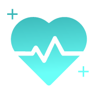
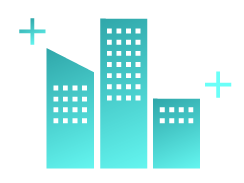
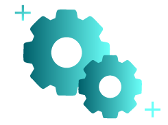

Success Cases
Solutions
| ★入門級醫療邊緣AI加速套組 | ★★進階級智慧醫療AI診斷工作站解決方案 | ★★★專業級基因工程AI運算與模型訓練平台 | |
|---|---|---|---|
| 適用對象 | 協助設備商提升產品附加價值，搶佔市場先機，特別是對於需要輕巧、低功耗但高效能AI的醫療設備。 | 針對需要更高運算能力的醫療設備商或研究機構。可與醫療影像系統、實驗室儀器整合。 | 鎖定大型醫療研究機構、製藥公司、基因科技公司，提供AI基礎設施，加速研發進程。 |
| 核心價值 | 為現有或新型醫療設備快速導入AI推論能力，實現即時影像分析、初步數據處理或患者監測。適用於單一設備的智慧化升級。 | 提供具備中等運算能力的AI工作站，用於醫療影像深度分析、輔助診斷，或小型基因數據的局部處理。可作為實驗室或診間AI輔助工具。 | 專為基因工程、藥物研發、精準醫療等領域設計的頂級AI運算平台，提供強大的AI模型訓練和大規模數據分析能力，加速科研突破與新藥開發。 |
| 產品組合 | AIoT：Jetson Orin（高效能邊緣AI模組） Server：此級別通常不含獨立伺服器，或僅需雲端推論服務 |
AIoT：X86主機板 + Rack Mount + consumer顯卡 Server：GPU Server（入門級，用於少量模型微調或數據管理） |
AIoT：Jetson Orin 或 X86主機板（數據採集前端） Server：ESC8000 + RTX Pro 6000（旗艦級GPU伺服器） |
| 官網連結 |
Jetson Orin 系列 醫療AI應用案例 |
X86 主機板系列 Rack Mount 解決方案 GPU Server 產品 |
ESC8000 系列 RTX Pro 6000 AI模型訓練解決方案 |
| ★入門級智慧城市邊緣感知與控制模組 | ★★進階級智慧城市區域數據匯集與分析方案 | ★★★專業級智慧城市AI中控與模型訓練平台 | |
|---|---|---|---|
| 適用對象 | 協助小型SI快速部署智慧城市基礎設施，提供標準化邊緣設備，降低初期成本。 | 針對中型SI承接的智慧城市項目，提供本地數據處理能力，減少廣域網路依賴。 | 鎖定大型SI承接的國家級或城市級旗艦項目，提供從邊緣到雲端的完整AI基礎設施。 |
| 核心價值 | 提供小型、堅固的邊緣運算設備，用於單點數據採集、簡單AI推論及即時控制。適用於智慧停車場閘門、零售POS機、環境感測器等。 | 將多個邊緣設備的數據匯集到區域性伺服器進行初步分析和管理，實現區域性的智慧化應用，如智慧園區管理、商業區人流分析、交通路口優化。 | 建立城市級的AI運算中心，整合海量邊緣數據，進行大規模AI模型訓練與優化，實現城市級的智慧交通、公共安全預警、智慧治理等複雜應用。 |
| 產品組合 | AIoT：Embedded（PE2000U/5100D）、EBS-S100、N3350T Server：數據可上傳至雲端或小型集中器 |
AIoT：Embedded（PE2000U/5100D）、EBS-S100 Server：2P Rack Server / GPU Server RS700/720 |
AIoT：Embedded、EBS-S100、N3350T Server：RS700/720（數據匯集）＋ ESC8000（AI模型訓練） |
| 官網連結 |
Embedded 嵌入式系列 EBS-S100 N3350T |
Embedded 嵌入式系列 RS700/720 系列伺服器 智慧城市解決方案 |
Embedded 嵌入式系列 RS700/720 系列伺服器 ESC8000 系列 |
| ★入門級智慧製造AIoT邊緣連接套件 | ★★進階級智慧製造AI視覺檢測解決方案 | ★★★專業級智慧製造AI大數據分析與模型訓練中心 | |
|---|---|---|---|
| 適用對象 | 協助機殼廠提供整合工業主機板的標準化IIoT閘道器，或與MetAI/Linker Vision合作，為其軟體提供數據採集前端。 | 與MetAI、Linker Vision等AI視覺軟體公司深度合作，提供其軟體所需的硬體平台，共同推動AI瑕疵檢測方案。機殼廠可提供客製化機殼整合。 | 鎖定大型製造業客戶，與MetAI、Linker Vision等軟體商合作，提供從邊緣到核心的完整AI解決方案。機殼廠可提供整體機櫃解決方案。 |
| 核心價值 | 實現工廠設備的聯網化，採集生產數據，為後續的數據分析和自動化控制打下基礎。適用於傳統機台的數位化升級。 | 在生產線上實現即時、高精度的產品瑕疵檢測，取代人工目檢，提高品管效率與一致性。適用於特定生產線的品質控制。 | 建立工廠級的AI運算與數據中心，整合全廠數據，進行大規模AI模型訓練，實現預測性維護、生產排程優化、製程參數調校等複雜智慧化應用。 |
| 產品組合 | AIoT：工控主機板 / X86主機板（標準品） Server：數據可上傳至工廠內部小型伺服器或雲端 |
AIoT：Jetson Orin 或 Rack Mount + consumer顯卡 Server：可選配小型GPU伺服器，用於模型微調或數據管理 |
AIoT：X86主機板、Rack Mount + 顯卡、Jetson Orin、工控主機板 Server：ESC8000 + RTX Pro 6000（工廠AI運算核心） |
| 官網連結 |
工控主機板系列 X86 主機板系列 IIoT 製造解決方案 |
Jetson Orin 系列 Rack Mount 解決方案 AI視覺檢測應用 |
ESC8000 系列 RTX Pro 6000 智慧工廠解決方案 |